This week’s data visualization exercise with MakeoverMonday is about comparing data over time. In this case, the exercise involved looking at an existing data visualization of rising and falling gas prices for both petrol and diesel fuel and suggesting improvements. I decided to animate this data among other things in my version of this data visualization.
For context, here is the original data visualization. One of the things I noticed right away is that the diesel and petrol fuel seem to follow the same kind of patterns throughout. The lines are so close together, and I’m thinking that maybe something else could be interesting here instead of simply comparing petrol and diesel fuel.
Here’s how I brought the data to life.
Tutorial
After connecting the data set to Tableau Public, I set out to show the petrol and diesel lines together right away. I did this by putting the diesel and petrol price fields on the rows shelf and the date on the columns shelf. I then made the charts “dual axis” by right clicking on one of the fields. Otherwise, the charts would have just been side by side with one line each.
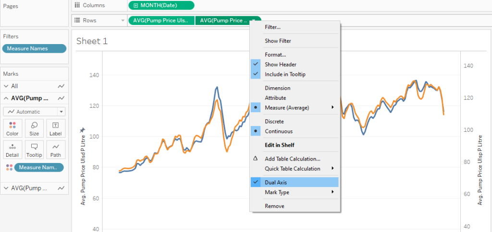
To try to show a little more separation in those lines, I edited the axis on the left side of the chart to start it well after 0. Normally, I would not want to do such a thing because it can be really misleading. However, in this case, I’ll be annotating several points of both lines later on in this tutorial to make it clear what the numbers actually are.
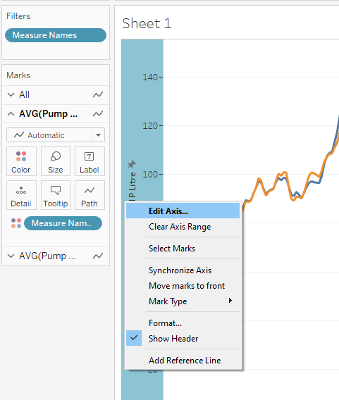
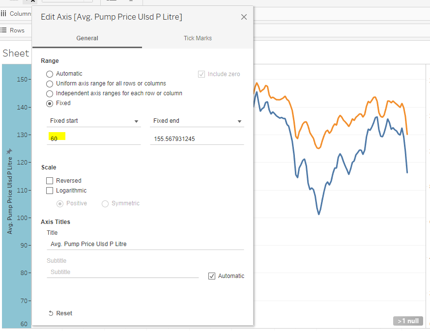
Keep in mind that we are not done yet with this dual axis chart. Dual axis charts are like two charts laid on top of each other. Since we changed the “start” of the chart on one, that means that we need to do the same on the other. Otherwise it would suggest that these lines are way further apart than they really are.
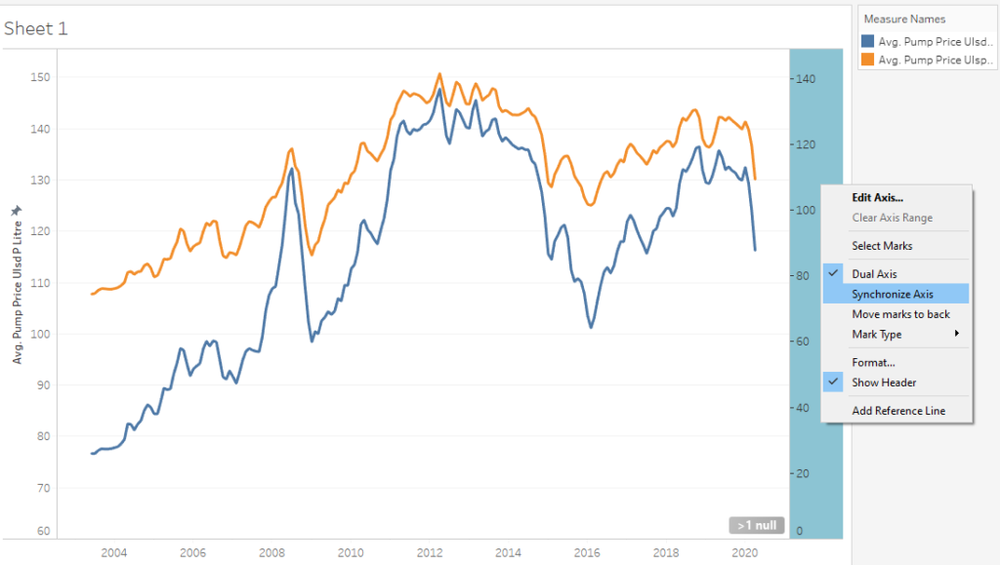
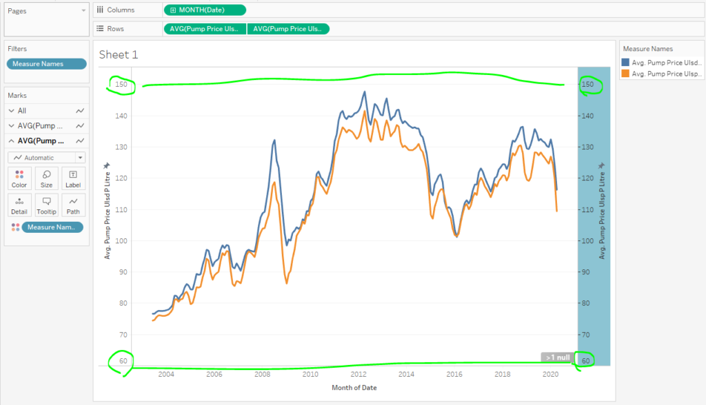
What Looks Interesting?
Because I formatted my date field to go by months, this chart shows me the drops and rises over any given month for about 15 years. I find the circled areas interesting because of the huge drops and rises. It makes me wonder what would influence the changes and what they mean.
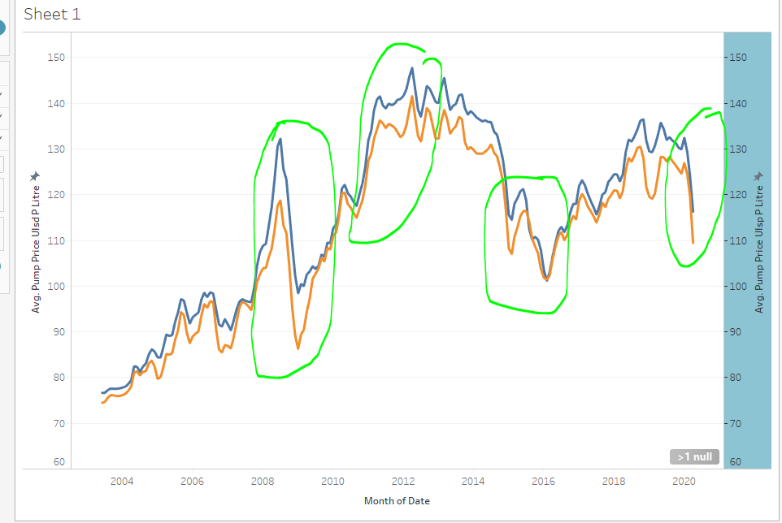
It is these drops and rises I hope to highlight as I set out to animate this line chart. Maybe specific relevant events happened at the same times as these huge drops and rises? That would help put more context to the data.
Let’s Animate!
To initiate the creation of animations in Tableau, I dragged and dropped the date onto the Pages card. Noticed I formatted it to show as months. What that will do is offer an animation point at every month for every year. If I would have selected something like quarters, then it would have done it by quarters. One point to note is that if you have it saying “Month(Date)” on the columns shelf, then you’re going to want it to say “Month(Date)” on the Pages card then too. If you don’t match them, you’re going to have a bad time.
While getting down to the exact day is nice, it seems to really bog down on the animation side because I can only pick three speeds to animate everything. Having it as months seemed to create a reasonable amount of time to watch an animation unfold over 15 years.
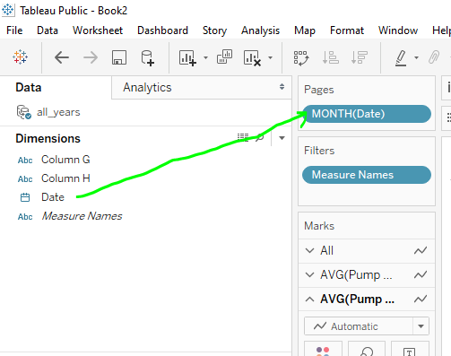
Here’s an issue I came across when I went to animate the actual data points. If I do not specify certain settings, then the dots themselves will just dance along the page. Not very helpful.
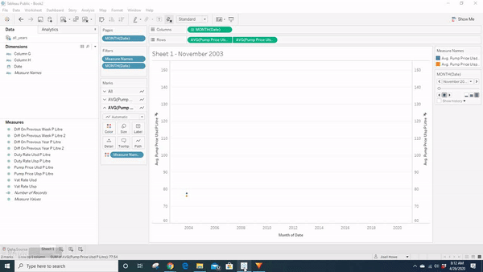
To remedy the situation, I changed the shapes to be circles and then changed the settings to show history for all points with a trail. Changing the shapes to be circles seemed to help with showing the trails.
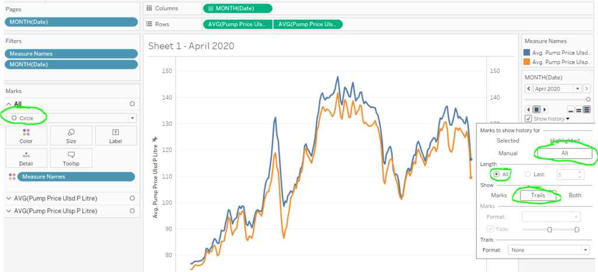
Let’s Annotate!
Usually when I annotate charts, I just right click where I want the annotation and then add it. In the case of animations though, this created a new challenge. Notice what creating an annotation at the point does.
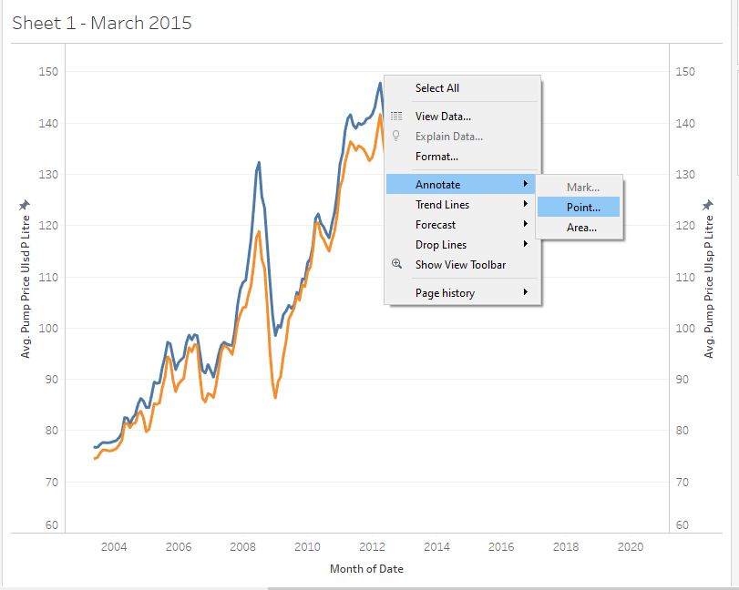
Right clicking on a point ends up being kind of difficult. April 2012 was a record high, but if I wasn’t careful where exactly I clicked, it would show March’s value annotated instead.
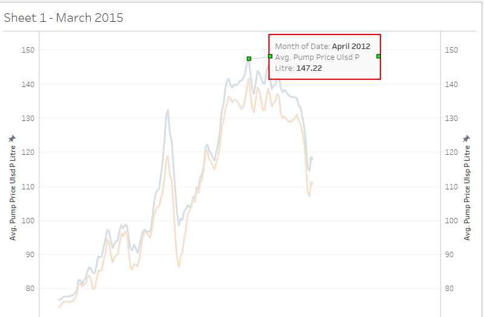
Also, if you restart the animation, the annotation stays there! That’s not good. :(
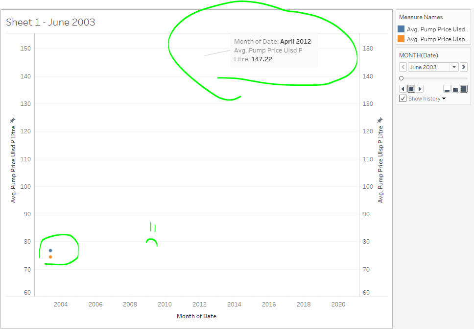
Annotating by Mark
Turns out, there are multiple ways to annotate charts and one way that will work splendidly well in this case is to do it by “mark.” Notice that it was grayed out in the other screenshot. To be able to actually use Mark, I noticed that I need to be at the point of the animation I want to mark with an annotation. So, wherever the dots were trailing, that’s where I could add an annotation. Let me show you what I mean.
For illustration, I made the circles huge and backed up to April 2012 in my animation. THEN I was able to right click, annotate, and select mark. I did the same for any other point I found interesting.
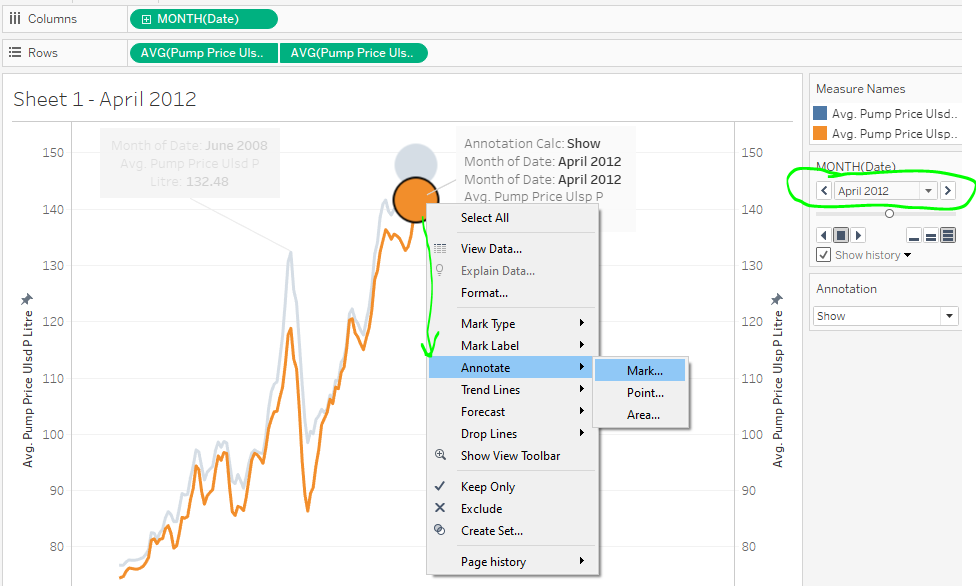
To reiterate, you need to back up the animation to the exact point you want to add the annotation there. Otherwise the Marks option will be grayed out.
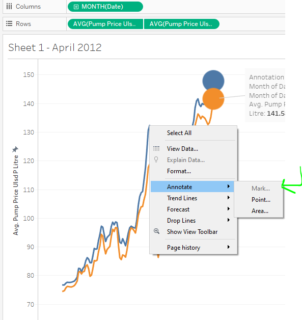
Here’s a rough draft of all the points I am interested in noting on this chart. Notice that Tableau just puts generated field names in there. I feel that this is your chance to really communicate to a viewer. Don’t miss this opportunity to reformat these things to actually be readable!
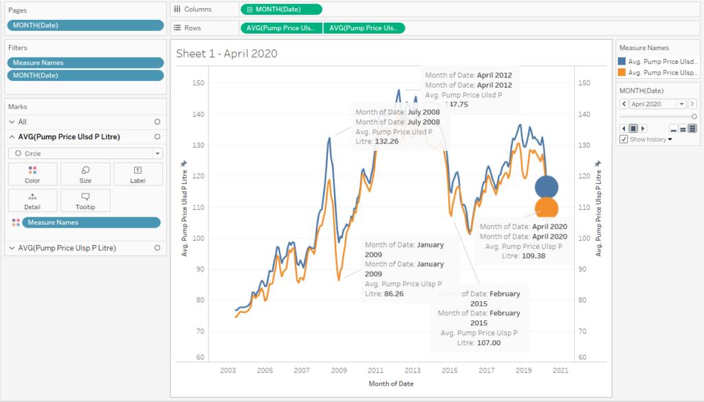
Here’s a quick example of formatting the tool tip and then formatting the annotations. Notice that I am using colors to call out Diesel and Petrol so then we can do away with needing a color legend.
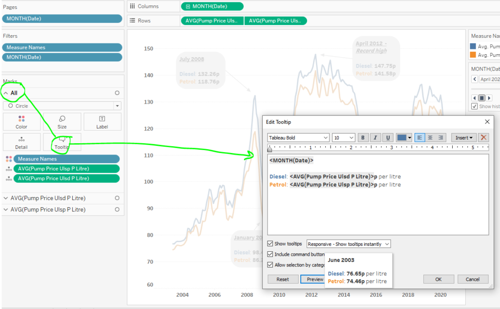
One thing I want to note here is that sometimes annotations and tool tips can get goofy if you do not have the field to pick from. To make my tool tips as workable as I can right away, I drag and drop fields I need to “details” on the marks card. That way, they will show up as fields that can be in the annotations. If I don’t do that, then I risk not having it show dynamically changing information.
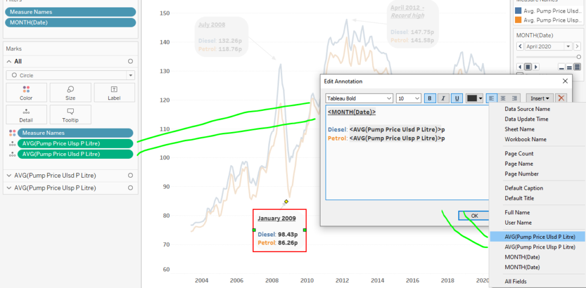
Formatting the Final Viz
Here are some more formatting choices I made by right clicking on the annotations and selecting “format.”
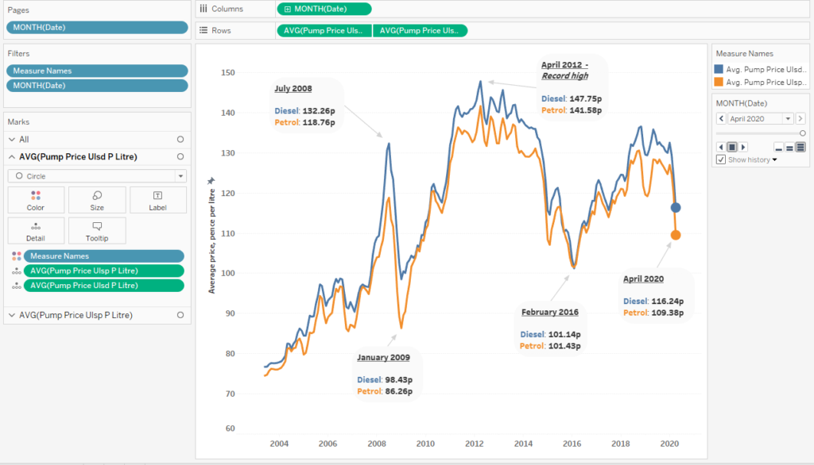
And here is the final data visualization in action! Now the viewer can watch the changes over time and put some context to critical points using the information I provided along the side of the dashboard.
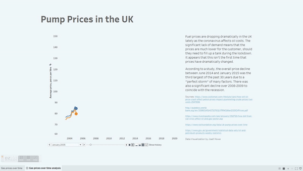
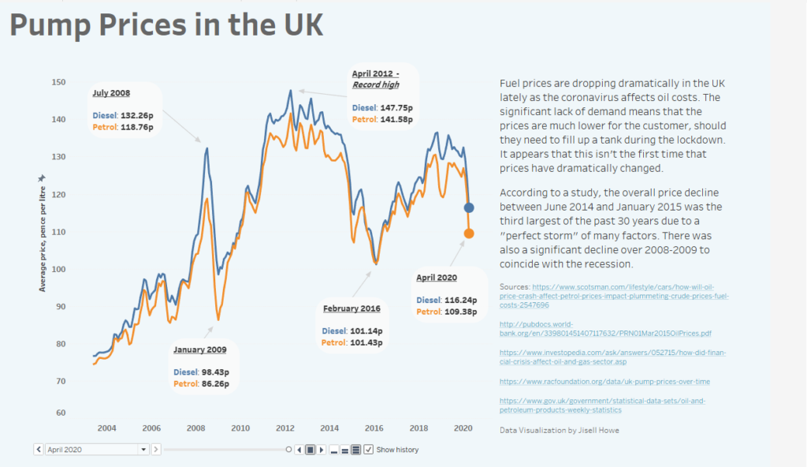
Link to interactive data visualization